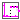
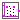
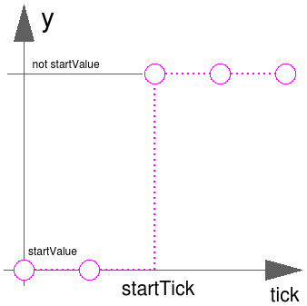
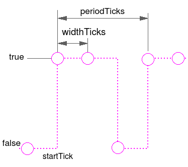

This package provides source components akin to the blocks provided in Modelica.Blocks.Sources, but with the difference that they provide
| Name | Description |
|---|---|
|  Step | Generate step signal of type Boolean |
|  Pulse | Generate pulse signal of type Boolean |
The Boolean output y is a step signal. The signal is defined in terms of clock ticks instead of simulation time:

See model Modelica_Synchronous.Examples.Elementary.BooleanSignals.TickBasedStep.
Extends from BooleanSignals.Interfaces.PartialClockedSO (Block with clocked single output Boolean signals).
| Name | Description |
|---|---|
| startTick | Output y = startValue for clock tick < startTick |
| startValue | Output before startTick |
| Name | Description |
|---|---|
| y | Connector of clocked, Real output signal |
The block is similar to the block in Modelica.Blocks.Sources.BooleanPulse, but adapted to work in clocked partitions (by internal sampling of the continuous time variable).
The Boolean output y is a pulse signal:

See model Modelica_Synchronous.Examples.Elementary.BooleanSignals.TickBasedPulse.
Extends from BooleanSignals.Interfaces.PartialClockedSO (Block with clocked single output Boolean signals).
| Name | Description |
|---|---|
| widthTicks | Width of one pulse in clock ticks |
| periodTicks | Number of clock ticks for one period [s] |
| startTick | Clock tick at which the first pulse starts |
| Name | Description |
|---|---|
| y | Connector of clocked, Real output signal |